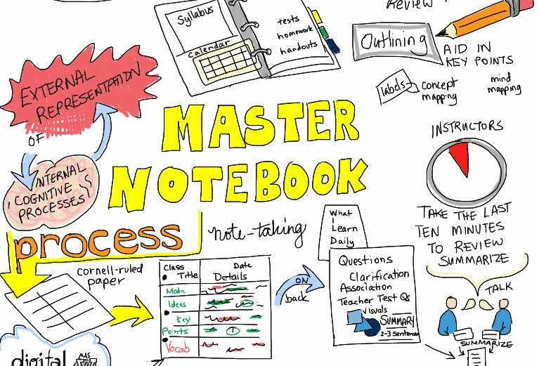

Note Making Strategies
Planning how to go about taking and making notes involves thinking about techniques, tools, layouts and how you will use your notes. There are also some issues to consider such as permission to make audio recordings of lectures or to photograph slide presentations.
Effective Note Making
Get tips on what to do and what not to do in order to take your notes in the most effective manner possible.